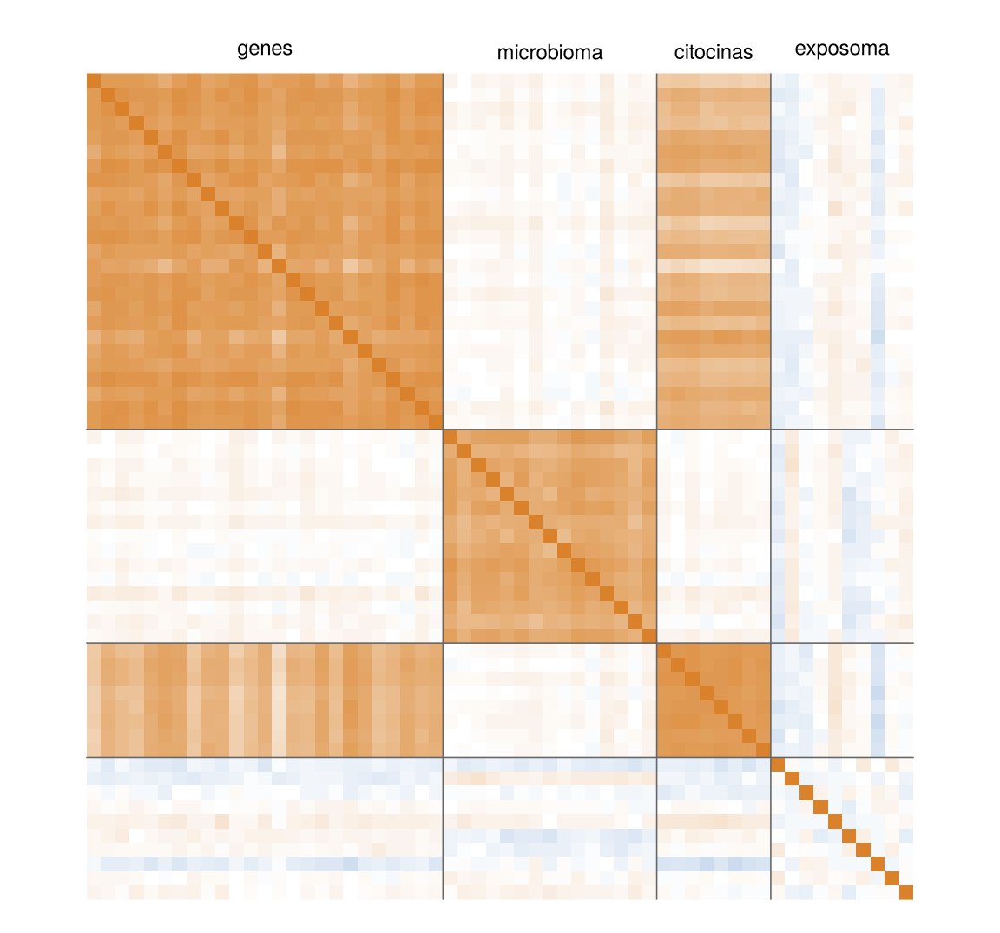
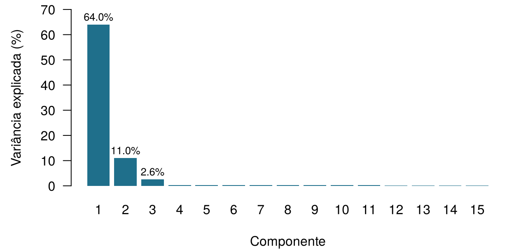
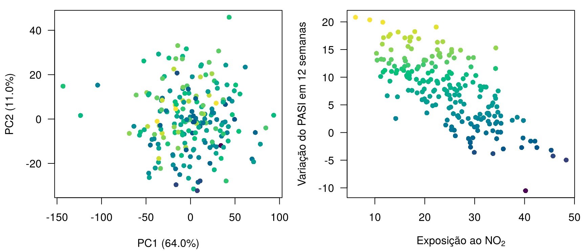
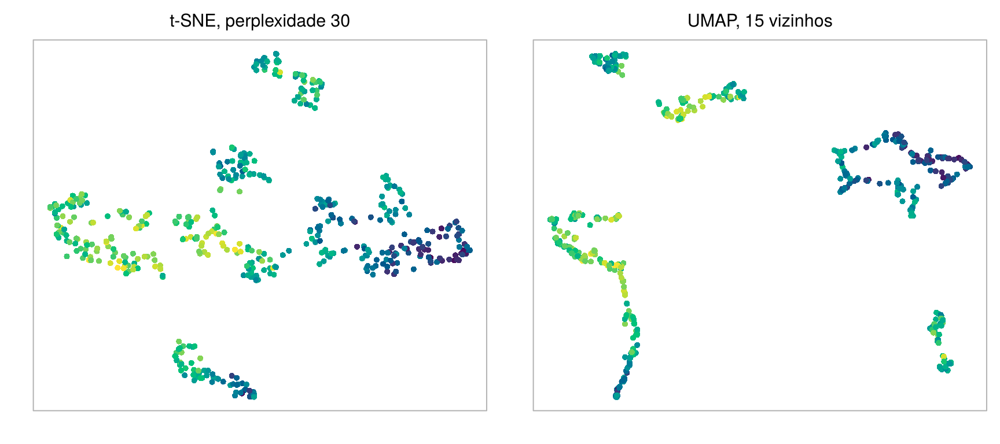
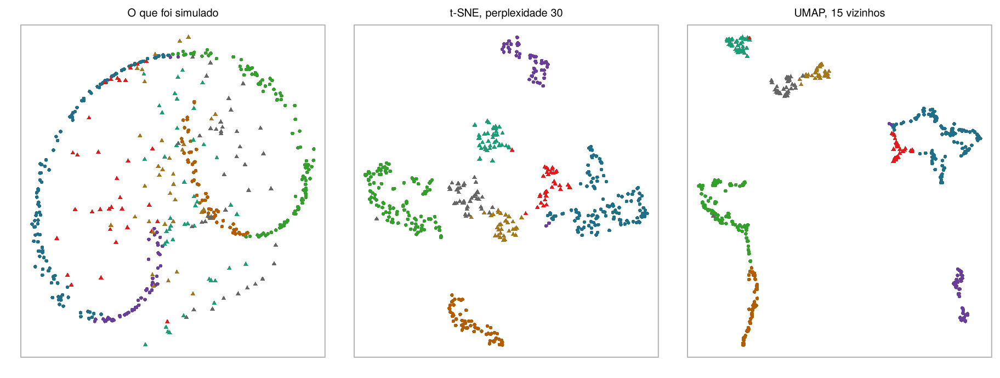

10 Dados de alta dimensão e redução de dimensionalidade
Quatro perguntas para aquecer. Arrisque seu melhor palpite; o capítulo explica cada uma.
| Pergunta | Sua resposta |
|---|---|
| Uma tabela tem 200 pacientes (linhas) e 1.850 medições (colunas). Em quantas dimensões vive cada paciente? | |
| Dois pacientes estão nos pontos (1, 1) e (4, 5) de um gráfico. Qual é a distância em linha reta entre eles? | |
| A creatinina passa a ser registrada em µmol/L em vez de mg/dL (cada valor multiplicado por 88,4). A distância em linha reta entre dois pacientes descritos por creatinina e idade… | |
| Um método que substitui muitas medições por poucas variáveis-resumo novas, sem olhar para nenhum desfecho, é um exemplo de… |
Como usar este capítulo
Começando por aqui?
Este capítulo toma emprestadas algumas ideias de capítulos anteriores. Em uma linha cada:
- Instâncias e atributos. Cada linha de um conjunto de dados é uma instância (um paciente), cada coluna um atributo; há \(n\) instâncias e \(p\) atributos, e \(\mathbf{x}_i\) reúne os atributos da instância \(i\) (Definição 1.7).
- O aprendizado não supervisionado procura estrutura nos atributos sem usar um desfecho (Seção 1.6.2). Tudo neste capítulo é não supervisionado; os desfechos aparecem apenas como cores sobrepostas aos resultados depois.
- Do Capítulo 3. O método dos \(k\) vizinhos mais próximos prediz a partir dos pacientes anteriores mais parecidos, sendo “parecido” entendido como próximo em distância euclidiana sobre atributos padronizados (cada atributo menos a sua média, dividido pelo seu desvio-padrão). As médias e os desvios-padrão usados em um fluxo preditivo devem vir apenas dos dados de treino; caso contrário, a padronização provoca vazamento.
- Do Capítulo 4. A colinearidade (preditores fortemente relacionados) torna instáveis os coeficientes de regressão; ridge e lasso domam modelos com mais preditores do que pacientes. No ONCO-1, os genes 08, 14 e 19 são cópias do desfecho com vazamento e ficam de fora, a menos que estejamos estudando o vazamento.
- Do Capítulo 2. A entropia mede a incerteza (a surpresa), em bits.
| Exemplo | Quem ou o quê | Desfecho | Rostos que você vai conhecer |
|---|---|---|---|
| 1 UTI Ala 7 | 1.250 pacientes de UTI em 4 hospitais | variação da creatinina em 48 h (lesão renal aguda se ≥ 0,3 mg/dL) | Aoife (71 anos, sepse, risco limítrofe), Tomás (54 anos, risco baixo), Priya (38 anos, risco alto); a Dra. Emma Walsh; Seán, o farmacêutico |
| 2 Ensaio ONCO-1 | 1.000 pacientes randomizados para quimioterapia ou não | redução do tumor (%) | pacientes #0042 e #0917 |
| 3 HomeBeat | 500 pessoas que usam um relógio inteligente em casa | escore de estresse, evento de deterioração | Lena |
| 4 CellWorks | 420 lotes de produção de uma terapia celular | escore de potência | lote CW-118 |
Os quatro conjuntos de dados são simulados e podem ser baixados no apêndice de dados. A apresentação completa está na Seção 1.1.
Este capítulo acompanha os pacientes em espaços com milhares de eixos e os traz de volta para uma página. Ele tem dez seções e um Lab, oito verificações rápidas, três widgets “Experimente”, um desafio de associação e três missões de programação em R e Python. Reserve cerca de 100 minutos. Você não precisa de nenhuma álgebra linear além da ideia de soma ponderada; cada fórmula é seguida por uma frase que diz a mesma coisa em palavras.
Notação em resumo (apenas para consulta)
| Símbolo | Significado | Seção |
|---|---|---|
| \(p\), \(n\) | número de atributos (dimensões), número de instâncias | Seção 10.1 |
| \(d(\mathbf{x}_i, \mathbf{x}_{i'})\) | distância entre as instâncias \(i\) e \(i'\) | Seção 10.2 |
| \(\mathbf{S}\) | matriz de covariância dos atributos (matriz de correlação após a padronização) | Seção 10.2 |
| \(\mathbf{u}_m\) | direção (vetor unitário de coeficientes) da componente principal \(m\) | Seção 10.5 |
| \(z_{im}\), \(\mathbf{z}_i\) | escore da instância \(i\) na componente \(m\); a sua representação em baixa dimensão | Seção 10.5 |
| \(s_m^2\) | variância dos escores na componente \(m\) (um autovalor de \(\mathbf{S}\)) | Seção 10.5 |
| \(q\) | número de componentes ou de dimensões do mapa mantidas | Seção 10.5 |
| Perp | perplexidade do t-SNE, o número efetivo de vizinhos | Seção 10.7 |
A lista completa está na página de notação.
10.1 O que é uma dimensão?
Comece pela coorte de dermatologia, que chamamos de Dermato-ATT. A psoríase é uma doença inflamatória crônica da pele em que as células cutâneas se multiplicam rápido demais e o sistema imunológico, em particular a via da interleucina-17 e da interleucina-23, fica hiperativo; os medicamentos que bloqueiam a IL-17 estão entre os tratamentos mais eficazes (Griffiths et al. 2021). A gravidade é pontuada com o Psoriasis Area and Severity Index (PASI), de 0 (pele limpa) a 72 (Fredriksson e Pettersson 1978). Antes da primeira injeção, a unidade registrou para cada um dos 200 pacientes os blocos da Tabela 10.1; o desfecho é a variação do PASI após 12 semanas de tratamento. Como todos os conjuntos de dados deste livro, a coorte é simulada: os nomes dos genes e dos micróbios são rótulos, não genes reais, e vamos olhar dentro do simulador na Seção 10.5.4.
data/dermato.csv) mantém todas as colunas clínicas, de citocinas e do exposoma, os primeiros 100 genes e os primeiros 50 atributos do microbioma.
| Bloco | Colunas | Exemplos | O que descreve |
|---|---|---|---|
| Clínico | 2 | PASI_baseline, DLQI |
gravidade e qualidade de vida no início |
| Citocinas | 18 | cytokine_1 … cytokine_18 |
proteínas inflamatórias no sangue |
| Exposoma | 30 | NO2, PM10, UV_index, temperature, humidity, expo_6 … |
ambiente onde o paciente vive |
| Genes | 1.500 | gene_1 … gene_1500 |
expressão na pele lesionada |
| Microbioma | 300 | ASV_1 … ASV_300 |
abundância de bactérias da pele (variantes de sequência de amplicon) |
| Total | 1.850 | mais Outcome_PASI12, a variação do PASI em 12 semanas |
Cada coluna é um eixo. Um paciente descrito por duas medições é um ponto em uma folha de papel; por três, um ponto em uma sala. Um paciente da Dermato-ATT é um ponto em um espaço com 1.850 eixos.
Definição 10.1 (Dimensão) A dimensão de um conjunto de dados é o seu número de atributos \(p\): cada atributo é um eixo, e cada instância é um ponto \(\mathbf{x}_i = (x_{i1}, \dots, x_{ip})\) em um espaço \(p\)-dimensional. Um conjunto de dados é de alta dimensão quando \(p\) é grande em relação ao número de instâncias \(n\); quando \(p\) é muito maior do que \(n\), escrevemos \(p \gg n\). A Dermato-ATT tem \(n = 200\) e \(p = 1\,850\); o ensaio ONCO-1 completo tem 2.000 genes.
Podemos olhar para poucos eixos de cada vez. A Figura 10.1 (à esquerda) posiciona cada paciente pelo PASI inicial e pela exposição ao dióxido de nitrogênio (NO2) e o colore pela variação do PASI em 12 semanas. Nenhum padrão salta aos olhos: pacientes que melhoraram muito e pacientes que quase não mudaram estão espalhados por toda parte. Acrescentar um terceiro eixo (um gene) produz uma nuvem que você poderia girar na tela, e ela continua sendo uma nuvem difusa. Os dados contêm relações fortes por construção, mas elas não são visíveis por meio de duas ou três coordenadas.
Os gráficos conseguem ir um pouco mais longe. Em um gráfico de coordenadas paralelas (Figura 10.1, à direita), cada variável se torna um eixo vertical e cada paciente uma linha que cruza todos eles; feixes de linhas que viajam juntas revelam perfis compartilhados (Inselberg 1985). Aqui os pacientes destacados, os que mais melhoraram, tendem a cruzar o eixo do NO2 embaixo: uma primeira pista, da qual vamos precisar mais adiante. Os gráficos condicionais (painéis trellis ou lattice) desenham o mesmo diagrama de dispersão em vários painéis, um para cada faixa de uma terceira variável, para que você veja como uma relação muda entre grupos (Cleveland 1993; Sarkar 2008). Ambos deixam de funcionar muito antes de 1.850 variáveis. Para ver a nuvem inteira, precisamos ou de uma maneira de medir a distância entre os pacientes em todas as dimensões ao mesmo tempo, ou de uma maneira de reduzir as dimensões a poucas que importam. Este capítulo faz as duas coisas, nessa ordem.
10.2 A que distância estão dois pacientes? Distâncias
Todos os métodos deste capítulo, assim como os \(k\) vizinhos mais próximos do Capítulo 3, começam com a mesma pergunta: a que distância estão dois pacientes?
10.2.1 Distância euclidiana, de duas dimensões a \(p\)
Em uma folha de papel, a distância entre os pacientes A e B é o comprimento do segmento de reta que os une. Se A está em \((x_{A1}, x_{A2})\) e B em \((x_{B1}, x_{B2})\), Pitágoras dá
\[ d(A, B) = \sqrt{(x_{B1} - x_{A1})^2 + (x_{B2} - x_{A2})^2} : \]
a diferença horizontal ao quadrado, mais a diferença vertical ao quadrado, e então a raiz quadrada (Figura 10.2, à esquerda). Em três dimensões, uma terceira diferença ao quadrado entra na soma. Nada nos impede de continuar: com \(p\) atributos, a distância euclidiana entre as instâncias \(i\) e \(i'\) é
\[ d(\mathbf{x}_i, \mathbf{x}_{i'}) = \sqrt{\sum_{j=1}^{p} (x_{ij} - x_{i'j})^2} , \qquad(10.1)\]
a mesma receita sobre \(p\) coordenadas: uma diferença ao quadrado por atributo, somadas, e depois a raiz quadrada.
10.2.2 Outras distâncias
A distância euclidiana é uma escolha entre várias, e cada escolha traduz uma ideia diferente do que significa “parecido” (Hastie, Tibshirani, e Friedman 2009, cap. 14).
- A distância de Manhattan soma as diferenças absolutas em vez de elevá-las ao quadrado, \(d_{\text{Man}}(\mathbf{x}_i, \mathbf{x}_{i'}) = \sum_j |x_{ij} - x_{i'j}|\): a distância que um táxi percorre em uma malha de ruas (Figura 10.2, no centro). Como as diferenças não são elevadas ao quadrado, uma diferença grande pesa menos e, para dados aleatórios, o contraste entre pontos próximos e distantes se desfaz mais lentamente do que com a distância euclidiana à medida que se acrescentam dimensões (Aggarwal, Hinneburg, e Keim 2001).
- A distância do cosseno olha apenas para a direção dos dois perfis, não para o seu comprimento: \(d_{\cos}(\mathbf{x}_i, \mathbf{x}_{i'}) = 1 - \dfrac{\sum_j x_{ij}x_{i'j}}{\sqrt{\sum_j x_{ij}^2}\,\sqrt{\sum_j x_{i'j}^2}}\). A fração é o cosseno do ângulo entre as duas setas da Figura 10.2 (à direita): vale 1 quando elas apontam para o mesmo lado, e então a distância é 0. Ela é adequada para perfis em que importam as proporções e não o total: dois swabs de pele com a mesma mistura de bactérias, um sequenciado com o dobro da profundidade do outro, têm distância do cosseno 0. O Capítulo 15 usa exatamente essa ideia para comparar documentos de comprimentos diferentes.
- A distância de Mahalanobis leva em conta as correlações entre os atributos (Mahalanobis 1936): \(d_{\text{Mah}}(\mathbf{x}_i, \mathbf{x}_{i'}) = \sqrt{(\mathbf{x}_i - \mathbf{x}_{i'})^\top \mathbf{S}^{-1} (\mathbf{x}_i - \mathbf{x}_{i'})}\), em que \(\mathbf{S}\) é a matriz de covariância dos atributos. Duas citocinas que sobem e descem juntas (na Dermato-ATT,
cytokine_1ecytokine_2têm correlação de 0,81) carregam em grande parte a mesma informação. Um paciente um desvio-padrão acima da média em ambas não tem nada de notável: distância de Mahalanobis 1,05 do paciente médio. Um paciente um desvio-padrão acima em uma e um abaixo na outra tem uma combinação incomum: distância 3,22, embora os dois pacientes estejam exatamente à mesma distância euclidiana padronizada (\(\sqrt 2\)) da média. O problema é que \(\mathbf{S}\) precisa ser estimada e invertida, o que é impossível quando \(p \ge n\): com 1.850 atributos e 200 pacientes, a matriz não tem inversa.
Definição 10.2 (Distância) Uma distância \(d(\mathbf{x}_i, \mathbf{x}_{i'})\) é uma regra que transforma dois vetores de atributos em um número não negativo, zero para instâncias idênticas e maior para instâncias menos parecidas. A distância euclidiana (Equação 10.1) soma diferenças ao quadrado; a distância de Manhattan soma diferenças absolutas; a distância do cosseno mede o ângulo entre os perfis e ignora o seu comprimento; a distância de Mahalanobis reescala o espaço pela inversa da matriz de covariância, para que atributos correlacionados não sejam contados duas vezes (Mahalanobis 1936). Escolher uma distância é escolher o que “parecido” significa (Hastie, Tibshirani, e Friedman 2009, cap. 14; Kaufman e Rousseeuw 1990).
Dois perfis de microbioma têm exatamente as mesmas proporções de cada bactéria, mas a amostra B foi sequenciada com o dobro da profundidade da amostra A, de modo que cada contagem em B é o dobro da contagem em A. Qual afirmação é verdadeira?
10.2.3 As unidades importam: padronize primeiro
Considere três pacientes hipotéticos descritos pelo PASI inicial (pontos), pela exposição ao NO2 (µg/m³) e por gene_1 (unidades de expressão), mostrados na Tabela 10.2.
| Paciente | PASI | NO2 | gene_1 | até A (bruto) | até B (bruto) | até A (padronizado) | até B (padronizado) | |
|---|---|---|---|---|---|---|---|---|
| A | A | 10 | 20 | 0.1 | 0.0 | 35.1 | 0.00 | 4.42 |
| B | B | 12 | 55 | 0.9 | 35.1 | 0.0 | 4.42 | 0.00 |
| C | C | 18 | 45 | 0.5 | 26.3 | 11.7 | 4.02 | 2.30 |
Na escala bruta, o NO2 é medido em dezenas de unidades e gene_1 em frações de unidade, de modo que o NO2 decide quase tudo: da distância ao quadrado entre A e C, 91% vem do NO2 e apenas 9% do PASI, embora A e C difiram em oito pontos de PASI, uma diferença clinicamente grande. Depois que cada variável é dividida pelo seu desvio-padrão na coorte (PASI 3,1, NO2 8,1, gene_1 1,16), a participação do PASI sobe para 40%. Nada mudou nos pacientes; só as unidades mudaram. Esta é a lição sobre escala do Capítulo 3, agora com muitas variáveis de unidades extremamente diferentes, e ela vale para toda distância, para a PCA e para todos os mapas deste capítulo.
Definição 10.3 (Padronização (escalonamento)) Padronizar um atributo significa subtrair a sua média e dividir pelo seu desvio-padrão: \(x^{*}_{ij} = (x_{ij} - \bar x_j)/s_j\). Todo atributo padronizado tem média 0 e desvio-padrão 1, de modo que as distâncias e as componentes principais deixam de depender das unidades de medida. Em um fluxo preditivo, as médias e os desvios-padrão são calculados apenas nos dados de treino (Capítulo 3); para um mapa puramente descritivo de uma coorte, eles vêm da coorte inteira.
Padronizar é uma escolha, não uma lei. Isso dá a todos os atributos o mesmo peso, o que é correto quando as unidades são arbitrárias (NO2 contra PASI) e pode ser errado quando todos os atributos compartilham a mesma unidade e a sua dispersão é informativa, ou quando muitos atributos ruidosos seriam inflados até a mesma importância de uns poucos atributos fortes (Jolliffe 2002, cap. 2). Faça a escolha de forma deliberada e relate-a.
Você calcula distâncias euclidianas entre pacientes da Dermato-ATT com as cinco variáveis nomeadas do exposoma (NO2, PM10, índice UV, temperatura, umidade) sem padronizar. Os desvios-padrão delas são cerca de 8, 6, 1, 5 e 12. Qual variável domina as distâncias?
A que distância estão dois pacientes do ONCO-1? Os 47 genes do ONCO-1 que não são cópias do desfecho com vazamento estão carregados como genes (uma linha por paciente). Padronize cada gene e depois calcule a distância euclidiana entre os dois primeiros pacientes. Preencha a lacuna com a função que padroniza.
A função tem o mesmo nome da ideia em inglês: ela escalona (scale) as colunas.
z <- scale(genes) # padroniza cada gene (coluna)O método é a abreviação de standard deviation (desvio-padrão, em inglês): três letras.
z = (genes - genes.mean()) / genes.std() # padroniza cada gene (coluna)Sobre os valores brutos de expressão, os mesmos dois pacientes ficam a uma distância diferente, porque os genes com grande dispersão dominam. O pandas e o R dividem ambos pelo desvio-padrão calculado com \(n-1\), então as duas linguagens concordam até o último dígito.
10.3 A maldição da dimensionalidade
A fórmula da distância se generaliza para qualquer \(p\). A nossa intuição, não. A maldição da dimensionalidade, expressão cunhada por Bellman (1961), reúne várias maneiras pelas quais os espaços de alta dimensão se comportam de modo diferente dos espaços de duas e três dimensões que conseguimos imaginar.
Definição 10.4 (Maldição da dimensionalidade) A maldição da dimensionalidade é o conjunto de problemas que surgem à medida que o número de dimensões cresce: os dados se tornam esparsos (qualquer número fixo de pontos cobre uma fração cada vez menor do espaço), as distâncias se concentram (o vizinho mais próximo e o mais distante de um ponto ficam quase igualmente longe) e os métodos que dependem de vizinhanças locais, como o \(k\)NN, precisam de exponencialmente mais dados para manter a mesma acurácia (Bellman 1961; Hastie, Tibshirani, e Friedman 2009, seç. 2.5).
Esparsidade. Suponha que os pacientes estejam distribuídos uniformemente em um cubo unitário e que você queira uma “vizinhança” que contenha 10% deles. Em uma dimensão, basta um intervalo de comprimento 0,10. Em dez dimensões, o subcubo precisa de arestas de comprimento 0,79; em cem dimensões, 0,977 (Hastie, Tibshirani, e Friedman 2009, seç. 2.5). Uma “vizinhança” que abrange quase toda a amplitude de cada variável já não é local: os seus vizinhos mais próximos não estão perto.
Concentração. Simule 200 pontos cujas coordenadas são todas puro ruído aleatório e compare o par mais próximo com o par mais distante (Tabela 10.3). Em duas dimensões, o par mais próximo quase coincide: a distância entre eles é 0,00063 da maior distância. Em mil dimensões, o par mais próximo já está a 84% da distância do par mais distante: todos estão aproximadamente à mesma distância de todos (Beyer et al. 1999).
| Dimensão p | Par mais próximo | Par mais distante | Razão mais próximo / mais distante |
|---|---|---|---|
| 2 | 0.00 | 5.60 | 0.001 |
| 10 | 1.43 | 9.07 | 0.157 |
| 100 | 10.33 | 17.87 | 0.578 |
| 1000 | 40.87 | 48.54 | 0.842 |
Veja as distâncias se concentrarem. Cem pacientes simulados são descritos por \(p\) atributos. O histograma mostra todas as 4.950 distâncias entre pares, cada uma dividida pela média delas, para que você veja a sua dispersão e não o seu tamanho; o gráfico de baixo mostra a razão entre a menor e a maior distância para cada \(p\). Alterne entre atributos que são ruído independente e atributos gerados por dois fatores ocultos mais ruído, como o bloco de genes da Dermato-ATT. Meta: com ruído independente, encontre o menor \(p\) em que o par mais próximo está a pelo menos metade da distância do par mais distante.
O segundo tipo de dados ensina a lição mais esperançosa. Quando os atributos são gerados por poucos fatores ocultos, acrescentar mais atributos acrescenta outra vez a mesma informação, e o contraste entre perto e longe sobrevive. A biologia real costuma se parecer mais com isso do que com puro ruído. Na Dermato-ATT, com todas as 1.850 medições padronizadas, o par de pacientes mais próximo está a 12% da distância do par mais distante; para 200 pontos de puro ruído no mesmo número de dimensões, seria 88%. O perigo está nos atributos que não carregam sinal compartilhado: cada um acrescenta um pouco de ruído a todas as distâncias, e um número suficiente deles afoga o sinal. É por isso que o pedido da equipe do ONCO-1 é mais difícil do que parece. Entre 2.000 genes, a maioria dos quais nada tem a ver com a resposta de um tumor, os “pacientes mais parecidos” com a #0042 são escolhidos em grande parte pelo ruído; o \(k\)NN do Capítulo 3, tão eficaz com dois atributos, pode se degradar muito quando recebe milhares.
Colinearidade. A última face da maldição é o oposto do ruído: a redundância.
Uma equipe propõe prever a resposta tumoral no ONCO-1 com os \(k\) vizinhos mais próximos usando todos os 2.000 genes, padronizados. Qual é o principal risco?
10.4 Correlação e redundância
As medições biológicas vêm em equipes. Genes ativados pelo mesmo programa de transcrição sobem e descem juntos; bactérias que compartilham um nicho prosperam juntas; poluentes do mesmo tráfego se movem juntos. A Figura 10.3 mostra as correlações entre uma amostra de variáveis da Dermato-ATT.

Definição 10.5 (Correlação e colinearidade) A correlação entre dois atributos mede, de −1 a 1, o quanto eles acompanham juntos uma linha reta. Um conjunto de atributos é colinear quando um deles pode ser escrito, exata ou aproximadamente, como uma soma ponderada dos outros. Atributos colineares carregam informação sobreposta: a nuvem de dados ocupa um espaço com menos dimensões do que o número de colunas sugere. A sua dimensão intrínseca é o número de direções independentes que ela realmente usa.
A colinearidade é um incômodo e um presente. É um incômodo porque, como o Capítulo 4 mostrou, os coeficientes de regressão de preditores colineares se tornam instáveis, e porque as distâncias contam muitas vezes a informação redundante: 1.500 genes que se movem juntos pesam 1.500 vezes em uma distância euclidiana. É um presente porque nos diz que as 1.850 colunas não são 1.850 informações separadas. Se um punhado de direções carrega a maior parte da variação, podemos descrever cada paciente pela sua posição ao longo dessas direções. Encontrá-las é a tarefa da análise de componentes principais.
10.5 Análise de componentes principais
10.5.1 A PCA como rotação
Observe a nuvem de pacientes no widget abaixo: cada ponto é um paciente, posicionado por dois genes padronizados. A nuvem é uma elipse inclinada. Ao longo dos eixos originais, ela se espalha moderadamente nas duas direções; ao longo da sua diagonal maior, espalha-se muito; na direção perpendicular à diagonal, muito pouco. Se você tivesse de descrever cada paciente com um número em vez de dois, o melhor número seria a posição do paciente ao longo da diagonal maior. Essa é a ideia da análise de componentes principais (PCA, do inglês principal component analysis) (Pearson 1901; Hotelling 1933).
Encontre a primeira componente principal à mão. A reta que passa pelo centro é um candidato a novo eixo. Cada paciente é projetado sobre ela (as pequenas marcas sobre a reta), e a variância capturada é a variância dessas posições projetadas. Gire o eixo e veja a variância mudar. A variância total de dois genes padronizados é 2. Meta: capture pelo menos 99% da maior variância que um único eixo consegue capturar.
Você acabou de fazer uma PCA em duas dimensões: girou o sistema de coordenadas para que o primeiro eixo aponte na direção de maior dispersão. O segundo eixo é obrigado a ser perpendicular ao primeiro e, aqui, carrega o que sobra. Nada mudou nos pacientes; apenas olhamos para eles de um ângulo melhor, assim como o cilindro do Capítulo 1 parecia uma elipse, um triângulo ou um arco, dependendo do ponto de vista (Figura 1.1).
10.5.2 O algoritmo
Com \(p\) atributos padronizados, a mesma ideia funciona em \(p\) dimensões. Uma direção é uma lista de \(p\) coeficientes \(\mathbf{u} = (u_1, \dots, u_p)\) com \(\sum_j u_j^2 = 1\), e a posição do paciente \(i\) ao longo dela é uma soma ponderada dos atributos do paciente:
\[ z_{i} = u_1 x_{i1} + u_2 x_{i2} + \dots + u_p x_{ip} . \qquad(10.2)\]
A PCA escolhe a primeira direção, \(\mathbf{u}_1\), de modo a tornar a variância dessas posições a maior possível; a segunda, \(\mathbf{u}_2\), de modo a tornar a variância restante a maior possível, sendo perpendicular a \(\mathbf{u}_1\); e assim por diante, até \(p\) direções (ou \(n - 1\), o que for menor). A álgebra linear resolve isso em um único passo: as direções são os autovetores da matriz de correlação \(\mathbf{S}\) dos atributos padronizados, e a variância ao longo de cada uma, \(s_m^2\), é o autovalor correspondente (Jolliffe 2002; Jolliffe e Cadima 2016). Você não precisa calcular autovetores à mão; precisa, sim, saber o que sai do cálculo.
Definição 10.6 (Análise de componentes principais (PCA)) A análise de componentes principais substitui \(p\) atributos correlacionados por novas variáveis, as componentes principais, que são somas ponderadas das originais (Equação 10.2), não correlacionadas entre si e ordenadas pela variância que carregam: a primeira tem a maior variância possível, cada uma das seguintes a maior variância perpendicular a todas as anteriores. Manter as primeiras \(q\) componentes dá o melhor resumo linear dos dados em \(q\) dimensões, no sentido de perder a menor variância. A PCA é não supervisionada: ela nunca vê o desfecho.
Definição 10.7 (Escores e cargas) O escore \(z_{im}\) é a posição da instância \(i\) ao longo da componente \(m\); os escores das primeiras \(q\) componentes, \(\mathbf{z}_i = (z_{i1}, \dots, z_{iq})\), são as coordenadas da instância no mapa da PCA. Os coeficientes \(u_{jm}\) dizem quanto o atributo \(j\) pesa na componente \(m\) (a função prcomp do R os chama de rotation). Para dados padronizados, a carga (loading) do atributo \(j\) na componente \(m\) costuma ser relatada como a correlação entre o atributo e a componente, \(u_{jm} s_m\); é o que o FactoMineR chama de coordenada da variável. Uma carga grande, positiva ou negativa, significa que o atributo se move fortemente com a componente.
Definição 10.8 (Variância explicada) A proporção da variância explicada pela componente \(m\) é \(s_m^2 / \sum_k s_k^2\). Com \(p\) atributos padronizados, a variância total é \(p\), de modo que ela é igual a \(s_m^2 / p\). Um gráfico de cotovelo (scree plot) mostra essas proporções em ordem; o ponto em que a curva se achata (o “cotovelo”) sugere quantas componentes carregam estrutura, e não ruído (Cattell 1966).
Após uma PCA da Dermato-ATT, o paciente P17 tem escore +40 na primeira componente. O que esse número descreve?
10.5.3 PCA da coorte Dermato-ATT
A coorte completa (200 pacientes, 1 850 variáveis padronizadas) foi analisada com a função PCA() do pacote R FactoMineR (Lê, Josse, e Husson 2008); o código está em scripts/precompute/ch10_pca.R e, aplicado à cópia dos dados para o navegador, no Lab. Duas linhas fazem o trabalho:
library(FactoMineR)
res <- PCA(X, scale.unit = TRUE, ncp = 10, graph = FALSE) # X: as 1.850 colunas, sem o desfechoscale.unit = TRUE padroniza cada variável antes; o desfecho e o identificador do paciente ficam de fora porque a PCA é não supervisionada. O resultado contém os autovalores (res$eig) e, para as variáveis, as suas coordenadas (cargas), cossenos ao quadrado e contribuições (res$var$coord, res$var$cos2, res$var$contrib), com os mesmos três para os pacientes em res$ind.

O gráfico de cotovelo (Figura 10.4) tem um cotovelo bem marcado. A primeira componente carrega 64,0% da variância total, a segunda 11,0%, a terceira 2,6%; juntas, as três primeiras carregam 77,6%, e cada componente seguinte carrega menos de 0,4%. Em outras palavras, 1.850 colunas se comportam como se fossem cerca de três, mais ruído.
10.5.3.1 Quais variáveis constroem cada componente? Contribuições bem lidas
O FactoMineR relata, para cada variável e componente, uma contribuição: a porcentagem da variância da componente que vem daquela variável. Para dados padronizados, ela é igual a \(100 \times u_{jm}^2\); portanto, é sempre positiva e, em cada componente, as contribuições de todas as variáveis somam 100%. Com 1 850 variáveis, a contribuição média é \(100 / 1850 = 0,054\%\). Tenha essa referência em mente ao ler os números da Tabela 10.4.
| Componente | Variável | Bloco | Carga | cos² | Contribuição (%) | Participação do bloco na componente (%) |
|---|---|---|---|---|---|---|
| PC1 | gene_538 | genes | 0.961 | 0.923 | 0.078 | 99.2 |
| PC1 | gene_364 | genes | 0.961 | 0.923 | 0.078 | |
| PC1 | gene_862 | genes | 0.959 | 0.919 | 0.078 | |
| PC2 | ASV_10 | microbioma | 0.896 | 0.803 | 0.394 | 99.0 |
| PC2 | ASV_235 | microbioma | 0.896 | 0.803 | 0.394 | |
| PC2 | ASV_71 | microbioma | 0.891 | 0.794 | 0.390 | |
| PC3 | cytokine_5 | citocinas | 0.631 | 0.399 | 0.831 | 13.3 |
| PC3 | cytokine_9 | citocinas | 0.627 | 0.393 | 0.819 | |
| PC3 | cytokine_6 | citocinas | 0.613 | 0.376 | 0.784 |
O gene principal da primeira componente contribui com 0,078%: mal acima da média de 0,054%. Isso não é uma fraqueza; é a assinatura de uma componente construída a partir de um bloco inteiro. Cada um dos 1.500 genes contribui um pouco, a maioria com cargas entre 0,80 e 0,94, e juntos os genes formam 99,2% da primeira componente. A segunda componente é o bloco do microbioma (99,0% dela, contribuição máxima de 0,394%: menos variáveis dividem a carga, então cada uma fica com uma fatia maior). A terceira é mais mista: as 18 citocinas juntas formam 13,3% dela, com contribuições individuais perto de 0,83%, e os genes formam a maior parte do resto, alguns com cargas positivas e outros com cargas negativas.
Três quantidades são facilmente confundidas, e a confusão leva a uma biologia errada:
- a carga diz com que força uma variável se move com a componente (e em que direção);
- o cos², a carga ao quadrado, diz quanto daquela variável a componente captura: cerca de 92% da variância do gene principal está na primeira componente;
- a contribuição diz quanto da componente aquela variável constitui. Uma única variável só pode contribuir com uma porcentagem grande se poucas variáveis dividirem a componente.
Uma contribuição de vários por cento de um único gene, em uma componente construída a partir de 1.500 genes semelhantes, é aritmeticamente impossível: dez genes nesse nível formariam sozinhos a maior parte do eixo. Verifique sempre se as contribuições somam 100 e compare-as com \(100/p\).
![Dois círculos unitários com eixos PC1 e PC2. À esquerda: uma faixa densa de 1.500 pontos de genes perto da borda direita, a cerca de 0,9 em PC1; uma faixa de 300 pontos do microbioma perto do topo, a cerca de 0,8 em PC2; pontos de citocinas a cerca de 0,65 em PC1; pontos do exposoma amontoados perto do centro. À direita: as setas de cinco genes apontam para a direita quase até o círculo, as de cinco atributos do microbioma apontam para cima quase até o círculo, as de cinco citocinas apontam para a direita mas terminam a cerca de dois terços do caminho, e as setas do NO2 e da umidade são minúsculas e terminam perto do centro.](ch10.pt_files/figure-html/fig-ch10-circle-1.png)
Um círculo de correlações (Figura 10.5) desenha cada variável como uma seta cujas coordenadas são as suas cargas em duas componentes. Setas que apontam para o mesmo lado pertencem a variáveis correlacionadas; setas perpendiculares, a variáveis não correlacionadas; uma seta que chega ao círculo é capturada quase inteiramente pelas duas componentes, e uma seta curta vive sobretudo em outras dimensões. Com 1.850 variáveis, o círculo completo é ilegível; por isso, desenhe um reduzido com as variáveis que você quer discutir. Repare nas duas setas curtas perto do centro: o NO2 e a umidade são quase invisíveis neste mapa. Guarde o NO2 na memória.
10.5.3.2 Onde ficam os pacientes?

Os escores posicionam cada paciente no mapa (Figura 10.6, à esquerda). Pacientes próximos têm valores semelhantes nas direções dominantes de variação; com três componentes carregando 77,6% da variância, as distâncias no mapa aproximam razoavelmente bem as distâncias no espaço completo, embora não perfeitamente. Colorir pelo desfecho não revela quase nada: as três primeiras componentes juntas explicam apenas 13% da variância da variação do PASI em 12 semanas, as dez primeiras 26%. No entanto, uma única variável, o NO2, explica sozinha 52% dela (Figura 10.6, à direita). A variável que mais importa para o desfecho é uma das duas setas curtas perto do centro do círculo; a sua maior carga entre as dez primeiras componentes é 0,40, na componente 9.
10.5.4 O que a simulação realmente contém
Como os dados são simulados, podemos abrir a caixa. O simulador (scripts/simulate/sim_dermato_att.R) sorteia quatro fatores ocultos para cada paciente, \(G_1\), \(G_2\), \(M_1\) e \(M_2\), todos variáveis normais padrão independentes, e constrói cada bloco a partir deles:
\[ \begin{aligned} \text{gene}_j &= a_j G_1 + b_j G_2 + \text{ruído}, &\quad a_j, b_j &\sim \mathcal{N}(0.7,\ 0.2^2) \text{ (a mesma distribuição)} \\ \text{ASV}_j &= c_j M_1 + d_j M_2 + \text{ruído}, &\quad c_j, d_j &\sim \mathcal{N}(0.5,\ 0.1^2) \\ \text{citocina}_j &= 2\,G_1 + \text{ruído} \\ \text{exposoma} &= \text{ruído independente, em escalas muito diferentes} \\ \text{Desfecho} &= 20 - 2\,G_1 + 1.5\,M_1 - 0.5\,\text{NO}_2 + \text{ruído} . \end{aligned} \]
Os comentários do código chamam \(G_1\) de “eixo inflamatório IL-17/IL-23” e \(G_2\) de assinatura de “barreira”, mas nada nos números os torna isso: cada gene mistura os dois fatores com pesos sorteados da mesma distribuição, e nenhuma via, IL-17 ou outra, é simulada. A Tabela 10.5 mostra como as componentes se alinham com os fatores ocultos.
| Componente | G1 | G2 | M1 | M2 | Desfecho | NO2 |
|---|---|---|---|---|---|---|
| PC1 | 0.75 | 0.74 | 0.05 | 0.07 | -0.17 | -0.12 |
| PC2 | -0.05 | 0.03 | 0.71 | 0.73 | 0.28 | -0.12 |
| PC3 | 0.66 | -0.67 | 0.01 | 0.02 | -0.17 | -0.05 |
| PC4 | -0.01 | 0.00 | -0.65 | 0.63 | -0.19 | 0.04 |
Leia a tabela linha por linha e as componentes contam uma história honesta:
- PC1 é a soma dos dois fatores gênicos (\(G_1 + G_2\)), porque todo gene tem carga positiva em ambos. Não é um eixo inflamatório; é “quanto do programa gênico compartilhado este paciente expressa”.
- PC2 é a soma dos dois fatores do microbioma.
- PC3 é o contraste \(G_1 - G_2\): a direção ao longo da qual os genes que pendem para \(G_1\) se separam dos genes que pendem para \(G_2\). As citocinas seguem apenas \(G_1\), por isso esta é a componente em que elas se destacam. PC4 é o contraste do microbioma.
- O desfecho depende de \(G_1\), de \(M_1\) e, sobretudo, do NO2, uma variável independente com grande dispersão que a PCA trata como uma coluna padronizada entre 1.850.
Daí decorrem três lições, que valem muito além deste conjunto de dados.
- Direções de grande variância não são necessariamente direções que importam. A PCA resume o que mais varia entre os atributos. Se isso tem relação com o desfecho é outra pergunta, que a PCA não pode responder. Usar as primeiras componentes como preditores (regressão por componentes principais) pode jogar fora exatamente o sinal de que você precisa (James et al. 2021, seç. 6.3); métodos supervisionados, como o lasso do Capítulo 4, olham para o desfecho quando fazem as suas escolhas.
- Componentes são objetos matemáticos; nomes são hipóteses. Chamar uma componente de “inflamação” é uma afirmação a ser testada com conhecimento externo, não um resultado da PCA.
- Leia os números antes da história. As contribuições somam 100; as cargas são correlações; um bloco de muitas variáveis semelhantes produz uma componente com muitas contribuições pequenas.
Na PCA da Dermato-ATT, um gene tem contribuição de 0,078% para a primeira componente. Um colega conclui: “Cada gene é irrelevante para a PC1.” Ele tem razão?
As três primeiras componentes principais da Dermato-ATT explicam cerca de 78% da variância dos atributos, mas menos de 15% da variância do desfecho. O que você deve concluir?
Associe cada descrição à quantidade da PCA que ela descreve.
- Onde o paciente P17 se encontra ao longo da primeira componente. Escore
- A correlação entre o NO2 e a nona componente. Carga
- A quantidade de variância carregada pela segunda componente. Autovalor
- A parte da variância do próprio
gene_538que a primeira componente captura. cos² - A porcentagem da primeira componente construída a partir de
gene_538; somada sobre todas as variáveis, dá 100. Contribuição
10.5.5 A escala, mais uma vez
E se deixarmos de lado scale.unit = TRUE? Considere apenas as 30 variáveis do exposoma. Sem padronização, a primeira componente explica 49% da variância delas, e a variável com o maior coeficiente é humidity: a componente é simplesmente “umidade”, porque a umidade tem o maior desvio-padrão (12 pontos percentuais) e as 25 variáveis expo_ têm desvio-padrão 1. Com padronização, a primeira componente explica 6%. É mais ou menos o que 30 variáveis não relacionadas produzem: sem estrutura, cada uma carregaria \(1/30 \approx 3.3\%\), e com 200 pacientes o acaso sozinho deixa a primeira componente captar um pouco mais. Essa é a verdade: as variáveis do exposoma foram simuladas de forma independente. Uma PCA sem padronização teria anunciado um “eixo da umidade” descoberto pelos dados; ele foi descoberto pelas unidades.
Quantos genes de informação? Faça uma PCA dos 47 genes do ONCO-1 sem vazamento e relate a proporção da variância explicada pela primeira componente. Lembre-se de padronizar.
scale. = TRUE padroniza cada gene antes de as componentes serem calculadas.
pca <- prcomp(genes, scale. = TRUE)A matriz padronizada já está armazenada em z.
pca = PCA().fit(z)As duas primeiras componentes juntas carregam 70% da variância dos 47 genes: o simulador do ONCO-1 constrói a expressão gênica a partir de dois fatores ocultos, e a PCA os encontra. Sem padronização, a primeira componente sozinha reivindicaria 51%.
10.6 Quando as retas não bastam
A PCA olha para os dados por meio de folhas planas: o seu mapa é uma projeção sobre o plano de maior dispersão. Se os pacientes estão sobre uma superfície curva, uma projeção esmaga partes dela umas sobre as outras, como um tapete enrolado visto de cima esconde a maior parte do seu desenho. Para dados assim, os métodos não lineares tentam manter cada paciente ao lado dos seus verdadeiros vizinhos, em vez de preservar as distâncias em linha reta.
Para conhecê-los, passamos ao terceiro pedido da segunda-feira de manhã. O conjunto de dados Digital Trial descreve 500 participantes de um ensaio descentralizado com onze atributos: quatro citocinas circulantes (cytokine_1–cytokine_4), quatro resumos de sinais de sensores vestíveis, como o ritmo de repouso e atividade e a variabilidade do movimento (wearable_1–wearable_4), três avaliações clínicas (clinical_1–clinical_3) e uma resposta ao tratamento, delta_score, com um rótulo binário responder (acima ou abaixo da resposta mediana). O conjunto de dados é simulado, e o seu simulador esconde um segredo que guardamos para a Seção 10.9. Todos os mapas abaixo usam os onze atributos, padronizados; delta_score e responder ficam de fora e são usados apenas como cores.
Uma PCA dos onze atributos espalha a variância por várias componentes: as duas primeiras carregam 28% e 20%, a terceira ainda 12%. Um mapa de PCA em duas dimensões mostra só cerca de metade do quadro. Você pode vê-lo no widget do final da próxima seção.
10.7 t-SNE: manter os vizinhos juntos
A incorporação estocástica de vizinhos com distribuição t (t-SNE, do inglês t-distributed stochastic neighbour embedding) desiste de preservar as distâncias em geral e se concentra em uma única coisa: quem está perto de quem (Maaten e Hinton 2008). Ela funciona em três passos.
- Vizinhanças no espaço original. Para cada participante \(i\), o t-SNE transforma as distâncias em probabilidades de serem vizinhos: o participante \(i'\) é escolhido como vizinho de \(i\) com probabilidade \[ p_{i' \mid i} = \frac{\exp\!\big(-d(\mathbf{x}_i, \mathbf{x}_{i'})^2 / 2\sigma_i^2\big)} {\sum_{k \ne i} \exp\!\big(-d(\mathbf{x}_i, \mathbf{x}_k)^2 / 2\sigma_i^2\big)} : \] participantes próximos recebem probabilidades altas; os distantes, quase zero. A largura \(\sigma_i\) é escolhida separadamente para cada participante, de modo que a vizinhança tenha uma perplexidade fixa, \(\text{Perp} = 2^{H_i}\), em que \(H_i\) é a entropia (em bits) das probabilidades \(p_{\cdot \mid i}\) (Capítulo 2). A perplexidade pode ser lida como o número efetivo de vizinhos: em uma região densa, \(\sigma_i\) encolhe; em uma esparsa, cresce, até que cada participante tenha aproximadamente Perp vizinhos. As probabilidades são então tornadas simétricas, \(p_{ii'} = (p_{i' \mid i} + p_{i \mid i'})/2n\).
- Vizinhanças no mapa. Cada participante recebe uma posição \(\mathbf{z}_i\) em duas dimensões, de início ao acaso, e o mesmo tipo de probabilidade \(q_{ii'}\) é calculado no mapa, mas com a curva t de Student, de caudas pesadas, \(q_{ii'} \propto (1 + \lVert \mathbf{z}_i - \mathbf{z}_{i'} \rVert^2)^{-1}\). As caudas pesadas permitem que participantes moderadamente diferentes fiquem longe uns dos outros no mapa, o que alivia o problema da aglomeração (crowding problem): há muito menos espaço em duas dimensões do que em onze.
- Fazer os dois concordarem. As posições são movidas, passo a passo, por descida do gradiente (Capítulo 7), para reduzir a discrepância entre os dois conjuntos de probabilidades, medida pela divergência de Kullback–Leibler \(\sum_{i \ne i'} p_{ii'} \log (p_{ii'} / q_{ii'})\) (Kullback e Leibler 1951). As discrepâncias são fortemente penalizadas quando vizinhos próximos são colocados longe, e só levemente quando participantes distantes são colocados perto.
Definição 10.9 (t-SNE) O t-SNE posiciona cada instância em um mapa de duas (ou três) dimensões de modo que as instâncias vizinhas no espaço original continuem vizinhas no mapa. Ele converte distâncias em probabilidades de vizinhança (com um tamanho de vizinhança definido pela perplexidade), usa uma curva t de Student de caudas pesadas no mapa e minimiza a divergência de Kullback–Leibler entre as duas por descida do gradiente, partindo de posições aleatórias (Maaten e Hinton 2008).
O pacote R Rtsne implementa uma aproximação rápida (Maaten 2014; Krijthe 2015):
library(Rtsne)
X <- scale(dt[, features]) # os 11 atributos, padronizados
set.seed(1)
fit <- Rtsne(X, perplexity = 30, max_iter = 1000, pca = FALSE)
plot(fit$Y, col = hcl.colors(100)[cut(dt$delta_score, 100)])
A Figura 10.7 (à esquerda) é o tipo de imagem que chegou na segunda-feira de manhã. Os participantes se distribuem em um punhado de ilhas, algumas redondas, outras compridas; as cores mudam suavemente ao longo de cada ilha, de modo que participantes com perfis semelhantes têm respostas semelhantes. Conclusões tentadoras se acumulam: “oito subtipos”, “as ilhas de cima respondem melhor”, “a ilha da esquerda está mais perto da ilha central do que da da direita”. A maioria delas não é sustentada por um mapa t-SNE (Wattenberg, Viégas, e Johnson 2016; Kobak e Berens 2019):
- Os tamanhos significam pouco. O t-SNE adapta a largura da vizinhança à densidade local, de modo que grupos densos e esparsos saem com tamanhos semelhantes no mapa.
- As distâncias entre as ilhas significam pouco. A otimização se preocupa em manter os vizinhos juntos; onde ilhas inteiras vão parar umas em relação às outras depende do início aleatório e da perplexidade. Os eixos não têm unidades.
- O mapa é aleatório. Cada execução parte de posições aleatórias; uma semente fixa o torna reprodutível, não correto. Outra semente produz outro arranjo, igualmente válido.
- A perplexidade muda a imagem. Valores pequenos fragmentam os dados em muitas ilhas pequenas; valores grandes as fundem. Não existe uma única configuração correta, e é por isso que você deve sempre olhar para várias.
- Ilhas não são agrupamentos, até prova em contrário. Um mapa pode partir uma estrutura contínua em pedaços, e o ruído pode formar grupos de aparência convincente.
O que um mapa t-SNE mostra de forma confiável é local: participantes colocados lado a lado estavam, em quase todos os casos, próximos no espaço original.
10.8 UMAP: um grafo de vizinhos estendido no plano
A aproximação e projeção uniforme de variedades (UMAP, do inglês uniform manifold approximation and projection) parte do mesmo objetivo por um caminho diferente (McInnes, Healy, e Melville 2018). Ela supõe que os dados estão sobre uma superfície curva de baixa dimensão (uma variedade, em inglês manifold) dentro do espaço de alta dimensão e aproxima essa superfície com um grafo.
- Construir um grafo de vizinhos. Cada participante é ligado aos seus
n_neighborsvizinhos mais próximos, com pesos que diminuem com a distância e são ajustados à densidade local, de modo que todo participante tenha uma vizinhança comparável, quer a sua região seja povoada, quer esparsa. - Dispor o grafo em duas dimensões. Partindo de uma disposição inicial, os pontos são atraídos para os seus vizinhos no grafo e repelidos dos não vizinhos, até que o grafo da própria disposição se pareça com o original (medido por uma entropia cruzada, parente próxima da divergência de Kullback–Leibler).
Definição 10.10 (UMAP) A UMAP constrói um grafo ponderado que liga cada instância aos seus vizinhos mais próximos no espaço original e encontra uma disposição em baixa dimensão cujo grafo de vizinhos se pareça com ele. As suas principais configurações são n_neighbors (quantos vizinhos definem a estrutura local: valores pequenos enfatizam os detalhes finos, valores grandes a organização mais ampla), min_dist (quão juntos os pontos podem ficar no mapa) e a metric de distância (McInnes, Healy, e Melville 2018).
No R, o pacote uwot oferece a UMAP (Melville 2023):
library(uwot)
set.seed(1)
Y <- umap(X, n_neighbors = 15, min_dist = 0.1, metric = "euclidean")A UMAP é rápida e muitas vezes produz ilhas mais arrumadas e compactas do que o t-SNE (Figura 10.7, à direita). Várias afirmações sobre ela são repetidas com tanta frequência que vale a pena verificá-las.
- “A UMAP é determinística; o t-SNE não.” Ambos partem de uma disposição inicial aleatória ou semialeatória e usam amostragem aleatória durante a otimização. Ambos são reprodutíveis com uma semente fixa (no uwot, também com uma única thread), e nenhum dos dois é único: uma semente diferente produz um mapa diferente.
- “A UMAP preserva a estrutura global; o t-SNE, só a local.” A fidelidade com que cada método mantém o arranjo em larga escala depende sobretudo da inicialização e do tamanho da vizinhança, não do nome do método (Kobak e Linderman 2021). Nenhum dos dois mantém de forma confiável as distâncias entre as ilhas e, na biologia de célula única, já se mostrou que ambos as distorcem substancialmente (Chari e Pachter 2023). Nos dados do Digital Trial, os dois métodos mantêm as distâncias globais mais ou menos igualmente bem (veja o widget abaixo), e a PCA as mantém melhor do que qualquer um deles.
- “Só a UMAP consegue posicionar novos pacientes em um mapa existente.” O uwot oferece
umap_transform()para isso, e existem extensões semelhantes para o t-SNE. Posicionar novos pontos é possível com ambos; confiar na posição deles é outra questão.
Em um mapa t-SNE de participantes de um ensaio, a ilha A fica perto da ilha B e longe da ilha C. O que você pode concluir com segurança?
Explore a grade de mapas. Todos os mapas abaixo foram calculados de antemão a partir dos mesmos 500 participantes: t-SNE com cinco perplexidades e UMAP com cinco tamanhos de vizinhança, cada um com duas sementes aleatórias, além da PCA. Dois números resumem cada mapa: vizinhos mantidos é a parcela dos 10 vizinhos mais próximos de cada participante no espaço de onze dimensões que também estão entre os seus 10 mais próximos no mapa (fidelidade local); concordância das distâncias é a correlação de postos entre todas as distâncias entre pares no espaço original e no mapa (fidelidade global). Mude também a coloração; as duas últimas opções revelam como os dados foram gerados. Meta: olhe para pelo menos cinco mapas diferentes.
Três padrões se destacam na grade. A PCA mantém apenas 29% dos vizinhos mais próximos de cada participante, mas tem a melhor concordância das distâncias (0,82): é fiel globalmente e descuidada localmente. O t-SNE e a UMAP mantêm 67%–78% dos vizinhos, mas concordam menos nas distâncias, sobretudo com vizinhanças pequenas. E a semente importa: com perplexidade 5, as duas execuções do t-SNE mantêm a mesma parcela de vizinhos (70% e 70%), mas a concordância das distâncias é 0,57 e 0,46: a estrutura local é mantida igualmente bem; o arranjo das ilhas, não.
10.9 Revelando a verdade: uma hélice e um rocambole
Agora abra o simulador (scripts/simulate/sim_digital_trial.R). Ele não simula pacientes, no sentido biológico. Ele sorteia pontos sobre duas formas geométricas em três dimensões:
- 350 participantes sobre uma curva. O código a chama de “curva em S”, mas, com coordenadas \(X_1 = \sin t\), \(X_2 = t\), \(X_3 = \cos t\) para \(t\) entre \(-3\pi/2\) e \(3\pi/2\), ela é uma hélice, uma mola de uma volta e meia: um objeto unidimensional.
- 150 participantes sobre um rocambole (Swiss roll), uma folha enrolada como um doce: um objeto bidimensional, um caso de teste clássico para mapas não lineares (Tenenbaum, Silva, e Langford 2000).
Cada atributo “biológico” é então calculado a partir das três coordenadas: as citocinas são funções suaves delas, os sinais vestíveis são oscilações rápidas (wearable_4 \(= \sin(10(X_1 + X_2))\) mais ruído, que oscila tão depressa que se comporta quase como ruído), e as três variáveis clínicas contêm saltos. clinical_1 vale 3 na hélice e 5 no rocambole; clinical_2 salta onde \(X_2\) muda de sinal; clinical_3 salta onde \(X_1\) muda de sinal. Essas três linhas de ifelse() cortam as duas formas em 8 pedaços: forma × sinal de \(X_1\) × sinal de \(X_2\).

A Figura 10.8 resolve a questão da segunda-feira de manhã. Os “oito subtipos” são os oito pedaços, e os pedaços foram criados por três linhas de código que ligam e desligam uma variável clínica. Os mapas fizeram o seu trabalho honestamente: no espaço dos onze atributos, esses pedaços estão de fato separados por saltos, e o t-SNE e a UMAP mantiveram cada pedaço junto (dois pedaços próximos nos onze atributos podem acabar dividindo uma ilha). O que os mapas não podem dizer é por que as ilhas existem. Aqui, a razão é um artefato da maneira como os atributos foram construídos, e a maior divisão de todas é uma única coluna: clinical_1 sozinha identifica a forma de 99,6% dos participantes. Repare também no que os mapas perderam. A hélice é uma curva contínua, mas aparece como quatro ilhas separadas, e nada no mapa diz que as ilhas se ligam umas às outras pelas pontas.
O que criou as oito ilhas dos mapas do Digital Trial?
Uma coluna, dois “grupos”. Verifique quão bem uma única variável, clinical_1, identifica de qual forma cada participante foi sorteado. Escolha um limiar: os participantes acima dele são rotulados como “rocambole”. A última linha calcula a parcela de participantes rotulados corretamente.
clinical_1 vale cerca de 3 na hélice e cerca de 5 no rocambole. Um limiar no meio do caminho funciona.
rule <- dt$clinical_1 > 4 # TRUE significa "rocambole" segundo uma única colunaclinical_1 vale cerca de 3 na hélice e cerca de 5 no rocambole. Um limiar no meio do caminho funciona.
rule = dt["clinical_1"] > 4 # True significa "rocambole" segundo uma única colunaA lição vale muito além das hélices simuladas. Os dados reais têm as suas próprias “três linhas de código”: efeitos de lote (Leek et al. 2010), uma troca de kit de laboratório, uma atualização do firmware de um sensor, uma regra de codificação que define uma variável como 0 para um grupo. Cada uma delas pode recortar uma coorte em ilhas que parecem biologia. Antes de dar nome a uma ilha, pergunte quais atributos a separam, colore o mapa por cada variável técnica de que você dispõe (centro, lote, data, dispositivo) e verifique se as ilhas sobrevivem a outras sementes e configurações.
Mais dois métodos que você pode encontrar: mapas auto-organizáveis e incorporação localmente linear
Um mapa auto-organizável (SOM, do inglês self-organising map) coloca uma grade de perfis “protótipo” no espaço dos dados e deixa cada protótipo se mover em direção às instâncias mais próximas dele, arrastando consigo os seus vizinhos na grade, de modo que células vizinhas da grade acabam com perfis semelhantes (Kohonen 1982). O resultado é um mapa sobre uma grade fixa, popular para resumir dados de sensores e dados ômicos. A incorporação localmente linear (LLE, do inglês locally linear embedding) descreve cada instância como uma média ponderada dos seus vizinhos mais próximos e depois procura posições em baixa dimensão que mantenham os mesmos pesos, desenrolando superfícies curvas como o rocambole quando as vizinhanças são bem escolhidas (Roweis e Saul 2000). Ambos compartilham os pontos fortes e as cautelas do t-SNE e da UMAP: dependem de distâncias, precisam de atributos padronizados, dependem de escolhas de ajuste e produzem mapas cuja estrutura deve ser verificada, não acreditada.
10.10 Onde isto se encaixa no ciclo de decisão
A redução de dimensionalidade raramente decide algo à beira do leito. A sua informação é um mapa ou alguns escores-resumo, e as decisões a que ela serve estão a montante: quais hipóteses testar, quais variáveis medir no próximo estudo, quais atributos fornecer a um modelo preditivo, quais pacientes comparar. Para os três pedidos da segunda-feira de manhã:
- ONCO-1. “Os pacientes mais parecidos com a #0042 em 2.000 genes” é uma pergunta que a maldição da dimensionalidade torna traiçoeira (Seção 10.3). Padronize e depois compare com base em algumas componentes principais ou em genes escolhidos com o desfecho (Capítulo 4), e verifique se os vizinhos encontrados são estáveis.
- Dermatologia. A PCA dá um mapa honesto e verificável (Seção 10.5): três componentes resumem 1.850 colunas, e as suas contribuições e cargas podem ser lidas. Mas o mapa é organizado pelo que mais varia, e o desfecho é determinado sobretudo por algo que ele mal mostra. Dê nome às componentes com cautela e não as use como preditores sem verificar o que elas descartam.
- O ensaio digital. As oito ilhas são estrutura real nos atributos, criada por três variáveis em degrau, e não oito subtipos biológicos (Seção 10.9). Um artigo exigiria que as ilhas sobrevivessem a outras configurações e sementes, uma verificação contra as variáveis técnicas e a confirmação em novos dados.
O que pode dar errado? Dados não padronizados que deixam as unidades decidirem (Seção 10.2); distâncias afogadas em dimensões de ruído (Seção 10.3); componentes nomeadas antes de serem lidas; mapas interpretados além da conta. Quem continua no controle? Os analistas e os clínicos que decidem qual estrutura merece um novo estudo e que tratam cada ilha como uma hipótese.
10.11 Lab: de 1.850 colunas a um mapa
O Lab reúne o código do capítulo em um só lugar. Ele usa a cópia da Dermato-ATT para o navegador (200 das 1.850 variáveis), de modo que os seus números diferem dos da análise com os dados completos apresentada acima. O t-SNE e a UMAP são pesados demais para o navegador, por isso o Lab lê os mapas pré-calculados; a versão em R os recalcula se os pacotes Rtsne e uwot estiverem instalados no seu computador; a versão em Python usa o scikit-learn (Pedregosa et al. 2011). Execute-o aqui ou baixe-o: ch10_lab.pt.R · ch10_lab.pt.py.
Três observações para levar adiante. Primeiro, a cópia para o navegador, com apenas 100 dos 1.500 genes, dá a mesma estrutura dos dados completos: uma componente para os genes, uma para o microbioma, uma para o contraste gênico, e contribuições que somam 100. Segundo, cinco componentes explicam muito menos do desfecho do que o NO2 sozinho. Terceiro, uma tabela de clinical_1 contra a forma oculta é quase perfeitamente diagonal: uma única coluna explica a maior divisão em todos os mapas.
10.12 Exercícios
- Unidades. Recalcule as distâncias da Tabela 10.2 com o NO2 em mg/m³ em vez de µg/m³ (divida por 1.000). Qual par de pacientes fica agora mais próximo? Por que a padronização faz a pergunta desaparecer?
- Cosseno ou euclidiana? Para cada comparação, diga que distância você escolheria e por quê:
- dois swabs de pele, comparados pelas proporções de 300 bactérias; (b) dois pacientes de UTI, comparados por SOFA, lactato e creatinina padronizados; (c) duas cartas de alta, comparadas pela frequência com que cada palavra aparece.
- Concentração. No widget da concentração, compare os dois tipos de dados em \(p = 1\,000\). Explique em duas frases por que fatores ocultos compartilhados protegem as distâncias da concentração.
- Contribuições. Uma PCA de 40 variáveis padronizadas dá a uma variável uma contribuição de 15% para a primeira componente. Isso é muito? Quanto seria se todas as 40 contribuíssem igualmente?
- Lendo as componentes. Use a Tabela 10.5 para explicar por que as citocinas, que dependem apenas de \(G_1\), contribuem mais para a PC3 e não para a PC1.
- PCA e vazamento. Faça uma PCA padronizada de todos os 50 genes do ONCO-1, incluindo os genes com vazamento 08, 14 e 19, e correlacione as cinco primeiras componentes com
response_percent. O que você encontra, e como a PCA poderia ajudá-lo a detectar um vazamento? - A grade de mapas. No widget, encontre a configuração do t-SNE que divide os dados no maior número de ilhas e a configuração da UMAP com a melhor concordância das distâncias. Alguma configuração junta os quatro pedaços da hélice em uma única curva?
- Código. Modifique o Lab para que a PCA da Dermato-ATT deixe de fora o bloco de genes. Qual bloco passa a dominar a primeira componente, e quanto do desfecho as cinco primeiras componentes explicam?
Respostas selecionadas
1. Em mg/m³, as diferenças de NO2 encolhem para alguns centésimos, de modo que o PASI domina: A e B (PASI 10 e 12) se tornam o par mais próximo, enquanto na escala original eram B e C. Depois da padronização, as unidades se cancelam (dividir pelo desvio-padrão remove qualquer mudança de escala), de modo que a resposta é a mesma qualquer que seja a unidade usada.
4. A contribuição média com 40 variáveis é 100/40 = 2,5%, então 15% é seis vezes a média: uma parcela substancial. Com contribuições iguais, cada variável teria 2,5%.
5. A PC1 é a soma \(G_1 + G_2\) compartilhada por todos os 1.500 genes; as 18 citocinas seguem apenas \(G_1\), de modo que a sua correlação com a PC1 é moderada e a sua participação em uma componente construída a partir de 1.500 genes é minúscula. A PC3 é o contraste \(G_1 - G_2\), a única direção ao longo da qual “apenas \(G_1\)” se destaca; por isso as cargas e as contribuições das citocinas são máximas ali.
6. Com os genes com vazamento incluídos, a componente 3 tem correlação de -0,79 com a resposta: os três genes com vazamento são cópias do desfecho, então se movem juntos e formam uma componente própria. Uma componente construída a partir de poucas variáveis e suspeitamente relacionada ao desfecho é um motivo para inspecionar essas variáveis, exatamente como um preditor quase perfeito no Capítulo 6.
7. Perplexidades pequenas (5) fragmentam ainda mais os pedaços. Nas nossas execuções, nenhuma das configurações da grade junta a hélice em uma única curva, porque clinical_2 e clinical_3 saltam onde as coordenadas mudam de sinal, e esses saltos são reais nos onze atributos.
10.13 Resumo
- A dimensão de um conjunto de dados é o seu número de atributos; com milhares de atributos e centenas de pacientes, \(p \gg n\).
- Uma distância traduz o que “parecido” significa: euclidiana, de Manhattan, do cosseno (direção, não comprimento) e de Mahalanobis (levando em conta as correlações). Padronize primeiro, ou as unidades decidem.
- A maldição da dimensionalidade: os dados se tornam esparsos e as distâncias se concentram, de modo que os métodos de vizinhança vacilam quando muitos atributos são ruído. Fatores ocultos compartilhados protegem a estrutura; dimensões de ruído a corroem.
- Colinearidade significa que os dados usam menos direções do que têm colunas, e é isso que a redução de dimensionalidade explora.
- A PCA gira os dados padronizados sobre componentes não correlacionadas, ordenadas pela variância. Os escores localizam os pacientes, as cargas relacionam as variáveis às componentes, os autovalores dão a variância explicada e as contribuições somam 100 por componente. As componentes resumem a variação, não a relevância para um desfecho, e os nomes dados a elas são hipóteses.
- O t-SNE e a UMAP mantêm as vizinhanças locais em um mapa bidimensional. O tamanho das ilhas, as distâncias entre elas e os eixos têm pouco significado; os mapas mudam com as sementes e as configurações; as ilhas são hipóteses que precisam ser verificadas, como mostraram a hélice e o rocambole.
Onde este capítulo será usado mais adiante
| Ideia deste capítulo | Onde ela reaparece |
|---|---|
| Distâncias, padronização, a maldição da dimensionalidade | Capítulo 11 (o k-means e o agrupamento hierárquico são construídos sobre distâncias) |
| Ilhas em um mapa são hipóteses; verificar a estrutura contra a verdade | Capítulo 11 (validação de agrupamentos, o índice de Rand ajustado) |
| Escores da PCA como atributos compactos | Capítulo 11 (agrupamento sobre componentes); Capítulo 12 (interpretar modelos com muitos atributos correlacionados) |
| Similaridade do cosseno entre perfis | Capítulo 15 (similaridade do cosseno entre documentos) |
| Representações de pacientes em baixa dimensão | Capítulo 16 (word embeddings); Capítulo 20 (espaços latentes de autoencoders) |
A seguir: os mapas deste capítulo nos convidam a desenhar círculos em torno de grupos de pacientes. O Capítulo 11 pergunta como os algoritmos encontram esses grupos e como distinguir um grupo real de um padrão criado pelo método ou pela coleta de dados.
Referências
Aggarwal, Charu C., Alexander Hinneburg, e Daniel A. Keim. 2001. «On the Surprising Behavior of Distance Metrics in High Dimensional Space». Em Database Theory: ICDT 2001, 1973:420–34. Lecture Notes em Computer Science. Berlin, Heidelberg: Springer. https://doi.org/10.1007/3-540-44503-X_27.
Bellman, Richard. 1961. Adaptive Control Processes: A Guided Tour. Princeton, NJ: Princeton University Press.
Beyer, Kevin, Jonathan Goldstein, Raghu Ramakrishnan, e Uri Shaft. 1999. «When Is “Nearest Neighbor” Meaningful?» Em Database Theory: ICDT’99, 1540:217–35. Lecture Notes em Computer Science. Berlin, Heidelberg: Springer. https://doi.org/10.1007/3-540-49257-7_15.
Cattell, Raymond B. 1966. «The Scree Test for the Number of Factors». Multivariate Behavioral Research 1 (2): 245–76. https://doi.org/10.1207/s15327906mbr0102_10.
Chari, Tara, e Lior Pachter. 2023. «The Specious Art of Single-Cell Genomics». PLoS Computational Biology 19 (8): e1011288. https://doi.org/10.1371/journal.pcbi.1011288.
Cleveland, William S. 1993. Visualizing Data. Summit, NJ: Hobart Press.
Fredriksson, T., e U. Pettersson. 1978. «Severe Psoriasis – Oral Therapy with a New Retinoid». Dermatologica 157 (4): 238–44. https://doi.org/10.1159/000250839.
Griffiths, Christopher E. M., April W. Armstrong, Johann E. Gudjonsson, e Jonathan N. W. N. Barker. 2021. «Psoriasis». The Lancet 397 (10281): 1301–15. https://doi.org/10.1016/S0140-6736(20)32549-6.
Hastie, Trevor, Robert Tibshirani, e Jerome Friedman. 2009. The Elements of Statistical Learning: Data Mining, Inference, and Prediction. 2.ª ed. New York: Springer. https://doi.org/10.1007/978-0-387-84858-7.
Hotelling, Harold. 1933. «Analysis of a Complex of Statistical Variables into Principal Components». Journal of Educational Psychology 24 (6): 417–41. https://doi.org/10.1037/h0071325.
Inselberg, Alfred. 1985. «The Plane with Parallel Coordinates». The Visual Computer 1 (2): 69–91. https://doi.org/10.1007/BF01898350.
James, Gareth, Daniela Witten, Trevor Hastie, e Robert Tibshirani. 2021. An Introduction to Statistical Learning: With Applications in R. 2.ª ed. New York: Springer. https://doi.org/10.1007/978-1-0716-1418-1.
Jolliffe, Ian T. 2002. Principal Component Analysis. 2.ª ed. Springer Series em Statistics. New York: Springer. https://doi.org/10.1007/b98835.
Jolliffe, Ian T., e Jorge Cadima. 2016. «Principal Component Analysis: A Review and Recent Developments». Philosophical Transactions of the Royal Society A 374 (2065): 20150202. https://doi.org/10.1098/rsta.2015.0202.
Kaufman, Leonard, e Peter J. Rousseeuw. 1990. Finding Groups in Data: An Introduction to Cluster Analysis. New York: Wiley. https://doi.org/10.1002/9780470316801.
Kobak, Dmitry, e Philipp Berens. 2019. «The Art of Using t-SNE for Single-Cell Transcriptomics». Nature Communications 10 (1): 5416. https://doi.org/10.1038/s41467-019-13056-x.
Kobak, Dmitry, e George C. Linderman. 2021. «Initialization Is Critical for Preserving Global Data Structure in Both t-SNE and UMAP». Nature Biotechnology 39 (2): 156–57. https://doi.org/10.1038/s41587-020-00809-z.
Kohonen, Teuvo. 1982. «Self-Organized Formation of Topologically Correct Feature Maps». Biological Cybernetics 43 (1): 59–69. https://doi.org/10.1007/BF00337288.
Krijthe, Jesse H. 2015. Rtsne: T-Distributed Stochastic Neighbor Embedding Using a Barnes-Hut Implementation. https://github.com/jkrijthe/Rtsne.
Kullback, Solomon, e Richard A. Leibler. 1951. «On Information and Sufficiency». The Annals of Mathematical Statistics 22 (1): 79–86. https://doi.org/10.1214/aoms/1177729694.
Lê, Sébastien, Julie Josse, e François Husson. 2008. «FactoMineR: An R Package for Multivariate Analysis». Journal of Statistical Software 25 (1): 1–18. https://doi.org/10.18637/jss.v025.i01.
Leek, Jeffrey T., Robert B. Scharpf, Héctor Corrada Bravo, David Simcha, Benjamin Langmead, W. Evan Johnson, Donald Geman, Keith Baggerly, e Rafael A. Irizarry. 2010. «Tackling the Widespread and Critical Impact of Batch Effects in High-Throughput Data». Nature Reviews Genetics 11 (10): 733–39. https://doi.org/10.1038/nrg2825.
Maaten, Laurens van der. 2014. «Accelerating t-SNE Using Tree-Based Algorithms». Journal of Machine Learning Research 15 (93): 3221–45. https://jmlr.org/papers/v15/vandermaaten14a.html.
Maaten, Laurens van der, e Geoffrey Hinton. 2008. «Visualizing Data Using t-SNE». Journal of Machine Learning Research 9: 2579–2605. https://www.jmlr.org/papers/v9/vandermaaten08a.html.
Mahalanobis, Prasanta Chandra. 1936. «On the Generalised Distance in Statistics». Proceedings of the National Institute of Sciences of India 2 (1): 49–55. http://hdl.handle.net/10263/6765.
McInnes, Leland, John Healy, e James Melville. 2018. «UMAP: Uniform Manifold Approximation and Projection for Dimension Reduction». arXiv:1802.03426. https://arxiv.org/abs/1802.03426.
Melville, James. 2023. uwot: The Uniform Manifold Approximation and Projection (UMAP) Method for Dimensionality Reduction. https://CRAN.R-project.org/package=uwot.
Pearson, Karl. 1901. «On Lines and Planes of Closest Fit to Systems of Points in Space». The London, Edinburgh, and Dublin Philosophical Magazine and Journal of Science 2 (11): 559–72. https://doi.org/10.1080/14786440109462720.
Pedregosa, Fabian, Gaël Varoquaux, Alexandre Gramfort, Vincent Michel, Bertrand Thirion, Olivier Grisel, Mathieu Blondel, et al. 2011. «Scikit-learn: Machine Learning in Python». Journal of Machine Learning Research 12 (85): 2825–30. https://jmlr.org/papers/v12/pedregosa11a.html.
Roweis, Sam T., e Lawrence K. Saul. 2000. «Nonlinear Dimensionality Reduction by Locally Linear Embedding». Science 290 (5500): 2323–26. https://doi.org/10.1126/science.290.5500.2323.
Sarkar, Deepayan. 2008. Lattice: Multivariate Data Visualization with R. Use R! New York: Springer. https://doi.org/10.1007/978-0-387-75969-2.
Tenenbaum, Joshua B., Vin de Silva, e John C. Langford. 2000. «A Global Geometric Framework for Nonlinear Dimensionality Reduction». Science 290 (5500): 2319–23. https://doi.org/10.1126/science.290.5500.2319.
Wattenberg, Martin, Fernanda Viégas, e Ian Johnson. 2016. «How to Use t-SNE Effectively». Distill 1 (10): e2. https://doi.org/10.23915/distill.00002.